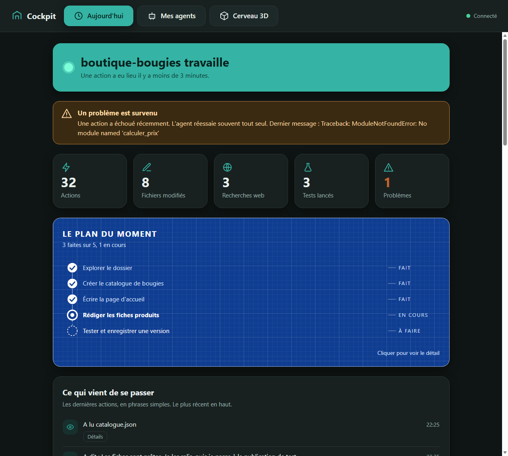
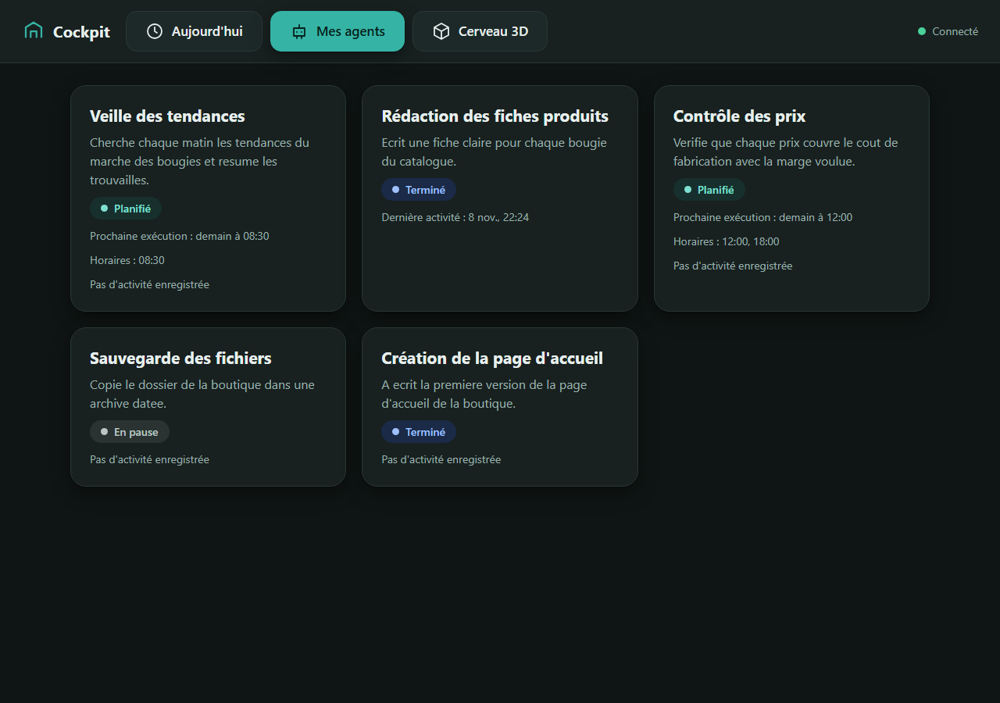
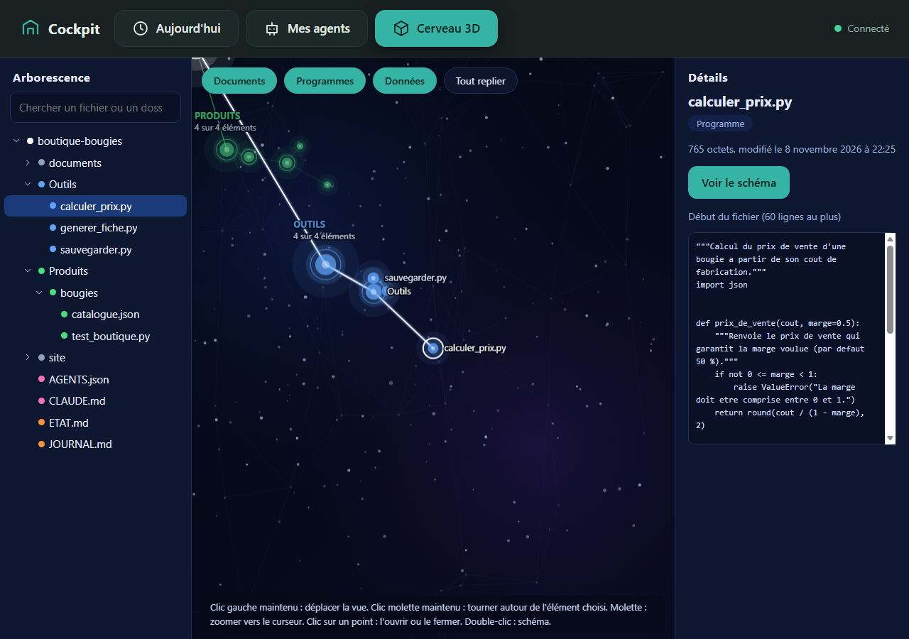
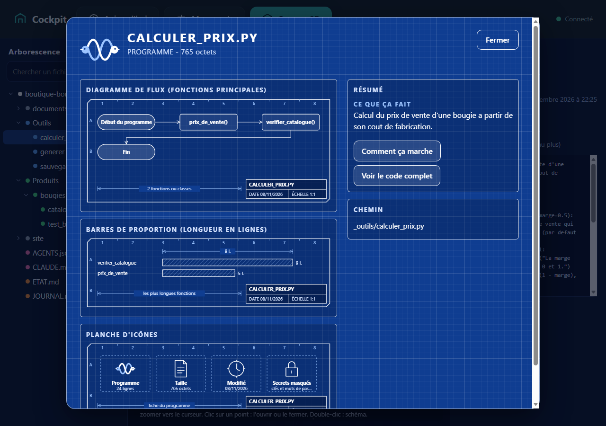
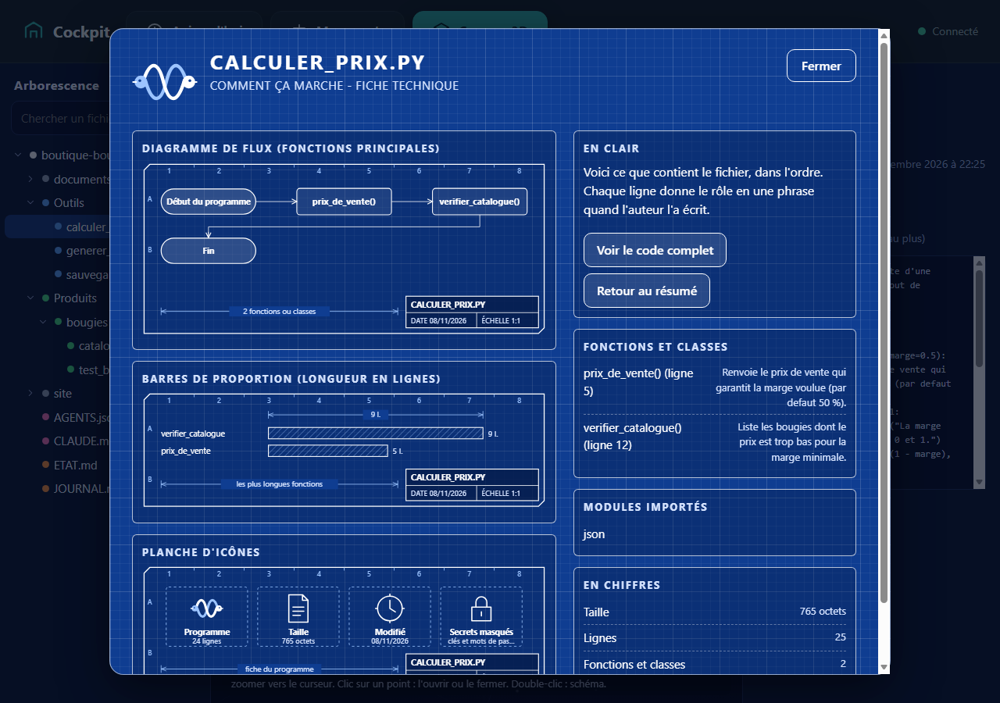
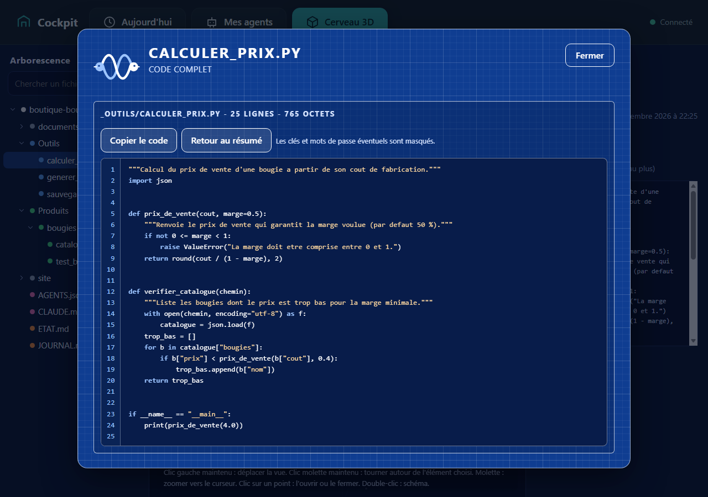

Voyez ce que fait votre agent, sans lire un seul fichier technique.
Quand Claude Code travaille, tout défile dans un terminal. Cockpit transforme ce défilement en une page claire : ce qui se passe maintenant, quels agents existent, et à quoi servent vos fichiers.
Gratuit pendant la phase de lancement. Fonctionne sur votre ordinateur, sans compte.

Trois bénéfices
Cockpit ne remplace pas Claude Code. Il vous aide à comprendre ce qui s'y passe.
Comprendre en un coup d'oeil
Un bandeau dit si l'agent travaille ou s'il est en pause, cinq compteurs résument la séance, et chaque action est écrite en phrase simple.
Savoir qui fait quoi
Une carte par agent : son rôle, ses horaires, son état (en cours, terminé, planifié, échec). Un agent ajouté à votre liste apparaît tout seul.
S'y retrouver dans vos dossiers
Une carte mentale en 3D de votre dossier de travail. Chaque fichier a une description à trois niveaux : résumé simple, explication technique, code complet.
Les quatre onglets
Toutes les images de cette page sont de vraies captures du Cockpit, prises sur un jeu de démonstration entièrement fictif : une boutique de bougies imaginaire, un utilisateur imaginaire, des fichiers inventés. Aucune donnée réelle n'y figure.
Aujourd'hui
L'état de l'agent, cinq compteurs (actions, fichiers modifiés, recherches web, tests, problèmes), le « plan du moment » quand l'agent en a écrit un, puis la chronologie des dernières actions en phrases simples. La page se rafraîchit toutes les 2 secondes.
Mes agents
Une carte par agent : à quoi il sert, son état et sa prochaine exécution. Les agents viennent d'un fichier de liste que vous tenez, et les sous-agents lancés pendant la session sont ajoutés automatiquement.

Missions à faire
Une liste de ce que vous devez faire, lue dans un fichier MISSIONS.md à la racine du dossier suivi. Un titre ## crée un groupe, - [ ] une mission à faire, - [x] une mission faite. Votre agent peut tenir ce fichier à jour pour vous dire ce qu'il attend de vous. Cockpit ne fait que le lire. Pas de capture d'écran pour cet onglet : elle viendra avec une prochaine version.
Cerveau 3D
Votre dossier de travail sous forme de carte mentale dans un décor d'espace et de neurones. Un clic ouvre un menu ou un dossier, la molette zoome, un double-clic ouvre une fenêtre en plans bleus qui décrit l'élément.

Chaque fichier se décrit à trois niveaux
Exemple sur un fichier fictif du jeu de démonstration : d'abord le résumé en français simple, puis la fiche technique, puis le code complet avec ses numéros de ligne.



Comment l'installer
Trois étapes, aucune installation classique : un seul fichier à lancer.
- Téléchargez le fichierRécupérez le fichier Cockpit.exe à cette adresse : https://github.com/businessiajc/cockpit/releases/latest. Le code source est consultable ici : https://github.com/businessiajc/cockpit.
- Double-cliquez sur Cockpit.exeAucune fenêtre noire : Cockpit tourne en arrière-plan. Pour l'arrêter, cliquez sur « Quitter » en haut à droite de la page (fermer l'onglet l'arrête aussi, au bout de 5 minutes).
- Ouvrez la pageCockpit ouvre tout seul votre navigateur. Sinon, tapez http://127.0.0.1:8780/ dans votre navigateur. Si l'outil ne trouve pas votre dossier de travail, la page vous le demande.
Pour qui
Pour les débutants qui utilisent Claude Code et qui veulent comprendre ce que leur agent fait, sans connaître le vocabulaire du développement.
Vous êtes à l'aise si
- vous utilisez déjà Claude Code sous Windows 11
- vous voulez voir l'activité de l'agent sans lire des journaux
- vous voulez savoir à quoi servent les fichiers de votre dossier de travail
Ce n'est pas pour vous si
- vous cherchez un outil pour discuter avec Claude : on discute toujours dans Claude Code
- vous êtes sous macOS ou Linux : non testé
Vie privée
Cockpit fonctionne entièrement sur votre ordinateur.
- Il lit seulement des fichiers locaux : les journaux de session de Claude Code et le dossier de travail que vous désignez. Il n'écrit rien dans vos fichiers.
- Aucune donnée n'est envoyée : le serveur n'écoute que l'adresse locale 127.0.0.1 et ne fait aucun appel réseau sortant.
- Aucun compte, aucun cookie, aucun script de suivi, sur ce site comme dans l'outil.
- Il masque les clés : les motifs courants de clés, jetons et mots de passe sont remplacés par [MASQUÉ] dans les phrases, les détails et les aperçus de code. Ce masquage repose sur des motifs connus : il ne garantit pas de repérer un secret de forme inhabituelle.
Limites honnêtes
Ce que Cockpit ne fait pas, et ce qui peut casser.
- Non affilié à Anthropic. Cockpit est un projet indépendant.
- Testé sous Windows 11 seulement. Aucun test sous une autre version de Windows, macOS ou Linux.
- Le format des fichiers de Claude Code n'est pas documenté et peut changer. Après une mise à jour de Claude Code, certaines informations peuvent manquer ou devenir fausses jusqu'à ce que Cockpit soit adapté.
- Ce n'est pas un client de discussion. On discute toujours dans Claude Code.
- Aucun lien avec un compte Claude. Cockpit ne se connecte à rien et ne lit pas votre abonnement ni votre consommation.
- Le fichier n'est pas signé : Windows affichera un avertissement au premier lancement.
- Les descriptions des fichiers viennent d'un fichier rédigé à la main ou, à défaut, des commentaires du fichier lui-même : un fichier sans commentaire aura une description pauvre.
Questions fréquentes
Est-ce que Cockpit consomme mon abonnement Claude ?
Non. Il lit seulement des fichiers déjà présents sur votre ordinateur. Il ne contacte pas Claude et ne consomme aucun jeton.
Mes conversations ou mes fichiers quittent-ils mon ordinateur ?
Non. Le serveur n'écoute que l'adresse locale 127.0.0.1 et ne fait aucun appel réseau sortant. Vous pouvez le vérifier en lisant le code source.
Combien ça coûte ?
Gratuit pendant la phase de lancement.
Pourquoi Windows m'avertit-il au lancement ?
Le fichier n'est pas signé numériquement, ce qui est le cas de beaucoup de petits outils gratuits. L'avertissement est donc attendu. Téléchargez le fichier uniquement depuis l'adresse officielle et, si vous préférez, lisez d'abord le code source.
Puis-je discuter avec Claude depuis Cockpit ?
Non. Cockpit n'envoie aucun message. On discute toujours dans Claude Code ; Cockpit sert uniquement à regarder.
Que se passe-t-il si Claude Code change ?
Le format des fichiers de Claude Code n'est pas documenté officiellement. Cockpit ignore ce qu'il ne reconnaît pas, mais une mise à jour de Claude Code peut rendre certaines informations incomplètes. Dans ce cas, Cockpit devra être adapté.
Essayez Cockpit
Gratuit pendant la phase de lancement. Trois étapes, un seul fichier, aucun compte.
Cockpit n'est ni affilié, ni approuvé par Anthropic. Claude et Claude Code sont des marques d'Anthropic.